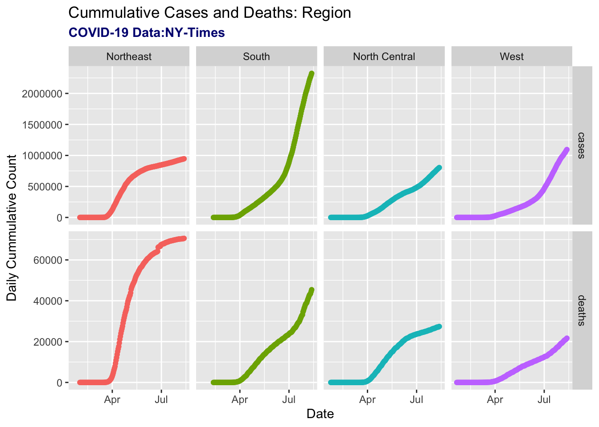

In this summer of 2020, I took a GEOG 176A class based in R. It is my first time using R to work on GIS, and I am so exciting to learn R and GIS. Here is all the work I would expect to learn!
library(tidyverse)
library(ggplot2)
url = 'https://raw.githubusercontent.com/nytimes/covid-19-data/master/us-counties.csv'
read_csv(url)## Parsed with column specification:
## cols(
## date = col_date(format = ""),
## county = col_character(),
## state = col_character(),
## fips = col_character(),
## cases = col_double(),
## deaths = col_double()
## )## # A tibble: 427,831 x 6
## date county state fips cases deaths
## <date> <chr> <chr> <chr> <dbl> <dbl>
## 1 2020-01-21 Snohomish Washington 53061 1 0
## 2 2020-01-22 Snohomish Washington 53061 1 0
## 3 2020-01-23 Snohomish Washington 53061 1 0
## 4 2020-01-24 Cook Illinois 17031 1 0
## 5 2020-01-24 Snohomish Washington 53061 1 0
## 6 2020-01-25 Orange California 06059 1 0
## 7 2020-01-25 Cook Illinois 17031 1 0
## 8 2020-01-25 Snohomish Washington 53061 1 0
## 9 2020-01-26 Maricopa Arizona 04013 1 0
## 10 2020-01-26 Los Angeles California 06037 1 0
## # … with 427,821 more rowscounties<-read.csv(url)
state = read_csv(url)## Parsed with column specification:
## cols(
## date = col_date(format = ""),
## county = col_character(),
## state = col_character(),
## fips = col_character(),
## cases = col_double(),
## deaths = col_double()
## )head(counties)## date county state fips cases deaths
## 1 2020-01-21 Snohomish Washington 53061 1 0
## 2 2020-01-22 Snohomish Washington 53061 1 0
## 3 2020-01-23 Snohomish Washington 53061 1 0
## 4 2020-01-24 Cook Illinois 17031 1 0
## 5 2020-01-24 Snohomish Washington 53061 1 0
## 6 2020-01-25 Orange California 6059 1 0select(state,cases)## # A tibble: 427,831 x 1
## cases
## <dbl>
## 1 1
## 2 1
## 3 1
## 4 1
## 5 1
## 6 1
## 7 1
## 8 1
## 9 1
## 10 1
## # … with 427,821 more rowsregion = data.frame(state.abb = state.name, region = state.region)
covid<-counties %>% inner_join(region, by = c("state" = "state.abb"))
covid <- covid[order(covid$region),]
covid$case <- unlist(tapply(covid$cases, covid$region, cumsum))
covid$death <- unlist(tapply(covid$deaths, covid$region, cumsum))
covid1 <- covid %>%
pivot_longer(cols=c("case", "death"),
names_to="group",
values_to="Daily_Cumulative_Count")
covid1 <- covid1[order(covid1$date),]
covid$date = as.Date (covid$date)
covid %>%
group_by(date, region) %>%
summarize(cases = sum(cases, na.rm = TRUE),deaths = sum(deaths, na.rm = TRUE)) %>%
ungroup() %>%
pivot_longer(cols = c('cases','deaths')) %>%
ggplot(aes (x = date, y = value)) +
geom_line(col = 'gray80') +
geom_point(aes(col = region))+
labs(x = "Date", y = "Daily Cummulative Count",
title = "Cummulative Cases and Deaths: Region",
subtitle = "COVID-19 Data:NY-Times") +
facet_grid(name~region,scales = "free_y") +
theme(legend.position = "none") +
theme(plot.subtitle = element_text(color = "navy", face = "bold"))## `summarise()` regrouping output by 'date' (override with `.groups` argument)